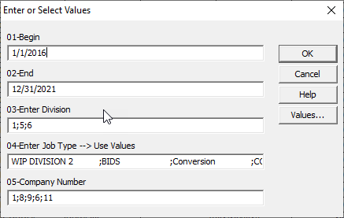

Extract
All data will be extracted from Concrete Value Corp's eCMS Database. eCMS is a comprehensive suite of software applications that help commercial contractors manage all aspects of their financials and operations. eCMS is specifically built for the construction industry delivering users business process automation and real-time access to critical integrated data. We will use Desktop Intelligence, a Crystal reporting software, to pull the data. We will use the query filter below and pull all data from 2016 to 2021.

Transform
Nulls, blanks, and unnecessary data to be removed to improve functionality. Our team has identified the issues with our dataset. Our Unit of Measurement creates an error because there are many entries that appear to be empty. When we would load the data, the system would tell us ERROR: extra data after last expected column. After further review, we discovered this was not a blank and was " " or several spaces as a string. We replaced all entries in the Unit of Measurement column with "NA" for not applicable. The change allowed the tables to be built and we successfully added all items to the tables.


Load
Our team needs access to the data. We built a database, added the tables in PgAdmin, and then connected to our AWS Relational Database Service (RDS). The team was able top connect to the database and export the data to CSVs or directly into Pandas. Any and all changes made during the Extract and Transform will now automatically update for every team member and provide an efficient way to gather our data.